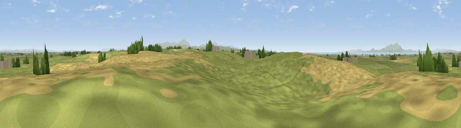

High West Hill
#12927 in England · top 69% of its area beats it · near Holme St CuthbertWhere it is
The exact computed spot (NY 11815 48423). Click the marker for map links.
The view, rendered

A 360° render of this exact spot computed from the terrain model, tree cover and land cover — summer colours, afternoon light, calibrated against photographs of famous viewpoints. Real trees, hedges and buildings will differ in detail.
The panorama
Grey silhouette: terrain skyline in each direction (720 bearings, Earth curvature and refraction included). Dashed green: skyline with trees (+15 m) and buildings (+8 m) as obstacles. Blue strip: how far the ground is visible on each bearing.
Where the view opens
Wedge length = distance to the farthest visible ground on that bearing (vegetation-aware). Rings at 10, 25 and 50 km.
What fills the view
64% grassland · 31% cropland · 3% water · 2% woodland ·
Angular shares of the visible panorama (visual magnitude), not map area. Landscape diversity 0.38 (0–1 Shannon).
Key numbers
More beautiful places nearby
The staircase of upgrades: each row has a higher view potential than everything closer. Driving times are estimates from straight-line distance, calibrated against real road routing — check an actual route before setting out.
| Place | Direction | Drive | Score |
|---|---|---|---|
| Hards Farm Hill | SE · 1 km | ~4 min | 69.9 |
| Viewpoint near Bothel | SSE · 12 km | ~22 min | 75.1 |
| Moota Hill | SSE · 12 km | ~23 min | 77.3 |
| Viewpoint near Bewaldeth | SE · 16 km | ~28 min | 78.0 |
| Binsey | SE · 17 km | ~29 min | 80.5 |
| Viewpoint near Embleton | SSE · 20 km | ~34 min | 81.8 |
| Viewpoint near Embleton | SSE · 20 km | ~34 min | 84.6 |
| Viewpoint near Bassenthwaite | SE · 23 km | ~38 min | 85.3 |
54.82286, -3.37406 · source: osm peak · position refined by local search. Computed location — check access rights before visiting.